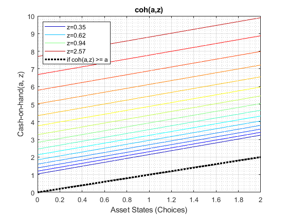
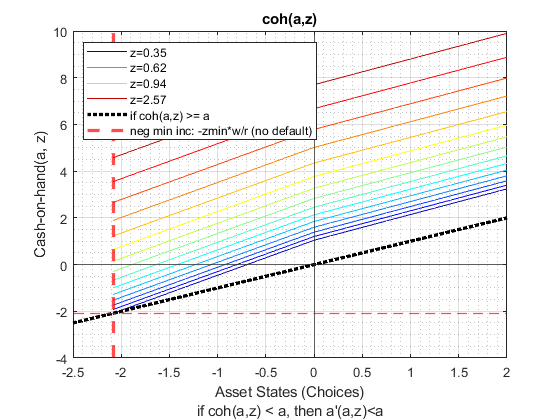
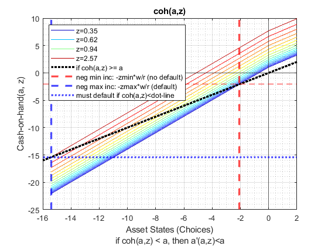
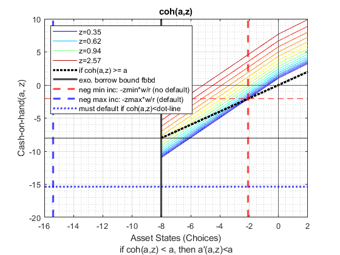

Test Borrowing Grid Default (Save + Borr Dynamic Programming Problem)
Testing the ffs_abz_get_funcgrid program which generates the borrowing and savings choice grid required for solving the borrowing and savings dynamic programming problem: ff_abz_vf_vecsv.
Below I show the choice grid for (1) savings only (2) borrowing without default, which means cash-on-hand next period must be always positive (3) borrowing grid with default, which extends up to negative asset levels where there is at least one state of high enough shock in which the borrower can still repay debt without defaulting.
@seealso
- BORROW GRID: borrowing choice grid with default: ffs_abz_get_funcgrid_defnodfalt
- BORROW: borrow and default small grid testing: ff_abz_vf_vecsv_default_small
- BORROW: borrow and default large grid testing: ff_abz_vf_vecsv_default_large
- PRECISION: borr + save quick vs benchmark testing: fsi_abz_vf_vecsv_main
- PRECISION: borr + save asset grid count testing: fsi_abz_vf_vecsv_a_n
- PRECISION: borr + save shock grid count testing: fsi_abz_vf_vecsv_z_n
Contents
Set Shared Parameters
close all % Production Function fl_a_max = 2; it_a_n = 50; fl_r_save = 0.10; % 10 percent savings interest rate fl_r_borr = 0.50; fl_w = 3; % Display bl_graph_funcgrids = true; bl_display_funcgrids = false;
Generate Savings a grid
% Not default parameters, but parameters that generate defaults it_param_set = 4; bl_input_override = true; [param_map, support_map] = ffs_abz_set_default_param(it_param_set); % graph and display support_map('bl_graph_funcgrids') = bl_graph_funcgrids; support_map('bl_display_funcgrids') = bl_display_funcgrids; % shared parameters param_map('fl_a_min') = 0; param_map('fl_a_max') = fl_a_max; param_map('it_a_n') = it_a_n; param_map('fl_r_save') = fl_r_save; param_map('fl_r_borr') = fl_r_borr; param_map('fl_w') = fl_w; % control saving, borrowing, default param_map('fl_b_bd') = 0; param_map('bl_default') = 0; % run program [armt_map, func_map] = ffs_abz_get_funcgrid(param_map, support_map, bl_input_override);
Warning: "C:\Users\fan\CodeDynaAsset\m_fibs\solve\mat" not found in path. Warning: "C:\Users\fan\CodeDynaAsset\m_fibs\solve\profile\ff_abz_fibs_vf_vec_default_p3" not found in path. Warning: "C:\Users\fan\CodeDynaAsset\m_fibs\solve\profile\ff_abz_fibs_vf_vecsv_default_p3" not found in path.
Generate Borrowing A Grid without Default
% Not default parameters, but parameters that generate defaults it_param_set = 4; bl_input_override = true; [param_map, support_map] = ffs_abz_set_default_param(it_param_set); % graph and display support_map('bl_graph_funcgrids') = bl_graph_funcgrids; support_map('bl_display_funcgrids') = bl_display_funcgrids; % shared parameters param_map('fl_a_min') = 0; param_map('fl_a_max') = fl_a_max; param_map('it_a_n') = it_a_n; param_map('fl_r_save') = fl_r_save; param_map('fl_r_borr') = fl_r_borr; param_map('fl_w') = fl_w; % control saving, borrowing, default param_map('fl_b_bd') = -20; param_map('bl_default') = 0; % run program [armt_map, func_map] = ffs_abz_get_funcgrid(param_map, support_map, bl_input_override);
Generate Borrowing A Grid with Default
% Not default parameters, but parameters that generate defaults it_param_set = 4; bl_input_override = true; [param_map, support_map] = ffs_abz_set_default_param(it_param_set); % graph and display support_map('bl_graph_funcgrids') = bl_graph_funcgrids; support_map('bl_display_funcgrids') = bl_display_funcgrids; % shared parameters param_map('fl_a_min') = 0; param_map('fl_a_max') = fl_a_max; param_map('it_a_n') = it_a_n; param_map('fl_r_save') = fl_r_save; param_map('fl_r_borr') = fl_r_borr; param_map('fl_w') = fl_w; % control saving, borrowing, default param_map('fl_b_bd') = -20; param_map('bl_default') = 1; % run program [armt_map, func_map] = ffs_abz_get_funcgrid(param_map, support_map, bl_input_override);
Generate Borrowing A Grid with Binding Exo Borrowing
% Not default parameters, but parameters that generate defaults it_param_set = 4; bl_input_override = true; [param_map, support_map] = ffs_abz_set_default_param(it_param_set); % graph and display support_map('bl_graph_funcgrids') = bl_graph_funcgrids; support_map('bl_display_funcgrids') = bl_display_funcgrids; % shared parameters param_map('fl_a_min') = 0; param_map('fl_a_max') = fl_a_max; param_map('it_a_n') = it_a_n; param_map('fl_r_save') = fl_r_save; param_map('fl_r_borr') = fl_r_borr; param_map('fl_w') = fl_w; % control saving, borrowing, default param_map('fl_b_bd') = -8; param_map('bl_default') = 1; % run program [armt_map, func_map] = ffs_abz_get_funcgrid(param_map, support_map, bl_input_override);